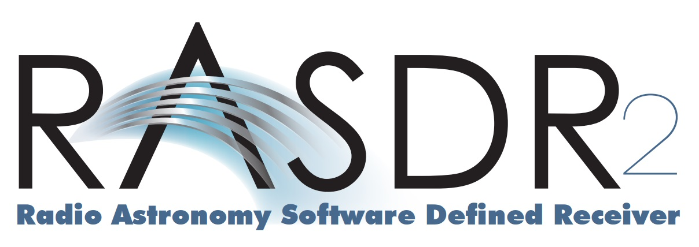
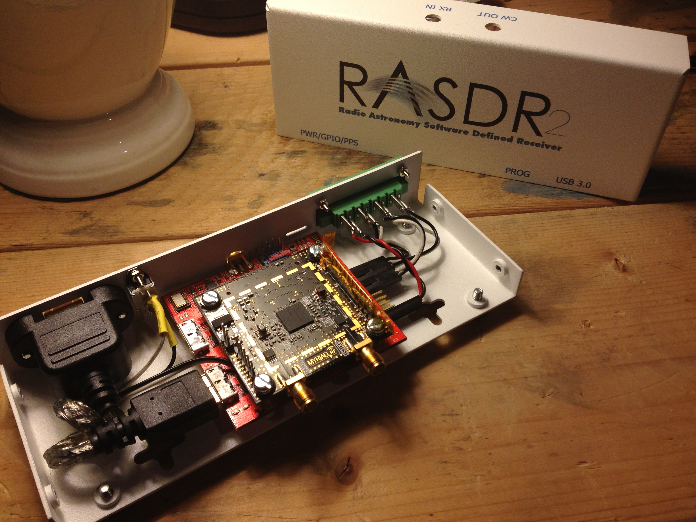
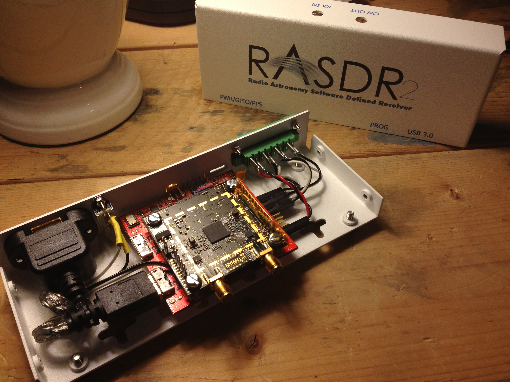

FAQ
Bogdan Vacaliuc <bvacaliuc@ieee.org>The questions in this FAQ are questions compiled from the various discussions the RASDR team has been asked during the years of development.
This FAQ is updated periodically. If there's a question you think belongs here, drop me an e-mail and I'll do my best to answer it.
- 1. Branding
- 2. The Project
- 3. The Code
- 4. Future
1. Branding
1.1. Why RASDR?
RASDR -- We wanted something that captured the heart of what we were trying to do; Radio Astronomy and Software Defined Radio. I guess we did not have any more imagination than that.
1.2. Do you have a logo?
Yes, what do you think of it?

You may also be interested in the case we manufactured for the board (sporting the logo, of course):
 

1.3. How can I get it?
The current unified software distribution is version 1.2.3. Please download it from there.
We are currently operating a Loaner Program for SARA members. If you would like to participate, please contact the SARA Educational Outreach officer from this link, and explain that you are interested in the RASDR program. They will be able to inform you of the requirements and provide you with an application.
1. The Project
2.1. How many people are working on this?
A list of contributors is available in the AUTHORS file.
2.2. How did this start?
Several SARA members including David Fields, Marcus Leech and Paul Oxley had started a discussion in early 2011 with the desire to develop a low cost receiver for radio astronomy and educational institutions. They developed several block diagram designs which are archived here. Some time later, Bogdan Vacaliuc joined the project to help with the programmable logic development part, along with Stan Kurtz providing guidance and support from the science aspect.
That summer, the team discovered the availability of the Lime Microsystems LMS6002D Field Programmable RF device. This allowed the design to reduce cost relative to using discrete components and increase specifications (12-bit sampling vs. 8-bit sampling). SARA provided a $2,500 grant to the team in September 2011 which were used to purchase an LMS6002D RF Quick Start Kit, Lattice CPLD development boards and parts to construct a prototype system. Progress was tracked in SARA Journal articles and the software development in the sourceforge project.
In the summer of 2013, Lime Microsystems, Ltd. collaborated with the RASDR team to develop a USB 3.0 hardware interface board for the Open Hardware MyriadRF-1 module. This collaboration has led to the current project development status.
2.3. Don't we already have all kinds of SDR products?
Indeed we do. It is a very active area of development with several excellent Open Source projects obtaining Kickstarter funding such as BladeRF and HackRF. Commercial products such as Ettus Research B200 and the RTL-SDR dongle also add to the constellation of cost-effective options for software defined radio. Marcus recently published "A 21cm Radio Telescope for the Cost-Conscious", about his experience using the RTL-SDR.
Our motivation is to develop a unified hardware+software product that is specifically tuned for radio astronomy observations. We also desire to produce this product and offer it to SARA members at the cost to manufacture it. In this way, we think we can provide the highest performance for the lowest cost.
2.4. Is this stable enough for production code?
Almost. Our team is made up of academics, retired or working telecommunications and electronics engineers. We work on this during available evenings and weekends and during our vacations. We would be grateful for your help.
2.5. Why CC-BY-3.0 and GPL?
The development of open source software has enabled fantastic innovations by extremely talented people. Each of us builds upon the efforts and development of others. We recognize these contributions and desire to position our product to take advantage of any and all contributions and available technologies. Since many tools, techniques and software codes are licensed under the Gnu Public License, we feel that keeping our software under that same license aligns us with the spirit of collaboration and openness that we have so far enjoyed.
Similarly, global technology development has made it possible for individuals to produce electronic systems at modest cost. Open Hardware Licensing efforts seek to provide a legal structure with which these physical systems can be developed, copied, enhanced and used collaboratively.
Many Open Hardware projects release their design information under a Creative Commons license because it provides a expedient legal framework. Our project website is released under this license and will remain that way. Our hardware/firmware designs begin with this model, but are not intended for manufacture. Once RASDR hardware modules are available in production quantity, the RASDR team intends to transition to using a CERN Open Hardware license. This is because of the additional and unique considerations required for the production of tangible goods such as patent protection and indemnification.
3. The Code
3.1. Why GitHub?
GitHub is quickly becoming the industry standard for project hosting. It is flexible, provides access to collaboration tools (forums, issue tracking, wiki) that everyone is familiar at using.
3.2. What build system are you using?
The hardware designs use KiCad, which is becoming the standard for Open Hardware designs, not the least part because of CERN's investment in support of the project.
The USB 3.0 device firmware is built using the Cypress EZ-USB software development environment.
The host software is built using Code::Blocks, an open-source cross-platform intelligent development environment.
4. Future
4.1. What's next for the project?
Well, we first have to make this version fully available for the lowest cost we can. Its a challenge, because we are using two connected boards, once of which is commercially available. We are producing this board along with the USB interface board in a sufficient quantity to meet the cost target we've set for the project.
4.2. What, ultimately, are you trying to achieve?
RASDR is a solution to a current problem: the lack of low cost hardware specifically tuned for radio astronomical measurements and observations.
As for an ultimate goal: systems function through layer upon layer of abstraction, and we're trying to create an abstract over something that some people are interested in doing (connecting computers to radio telescopes) and is *very* hard to get right. With luck, we'll have fun and share good ideas in the process.
4.3. How can I contribute?
We need help in a lot of areas. In particular:
- Discussions. We have a discussion forum opened at myriadrf.org to talk about aspects of the project and to get technical support questions answered. There is also a RASDR community developed around a variety of topics.
- Cross-platform. Believe it or not, we have focused our development on Windows. Our example/starter software doesn't work on Mac OS X or Linux, yet. There are several open source projects which support the USB 3 interface these platforms and we could use help integrating.
- Applications. RASDR is intended to be useful to your projects by enabling access to the radio frequency spectrum.
- The documentation is progressing. We have a User Manual, but need help with Experiment Guides.
- The wiki has no content nor organization.
- The GitHub issue tracker has few topics. As we progress, we will have outstanding issues to check or attempt to rectify. Even something as simple as a “me too” comment is helpful, and a fix is obviously even better.